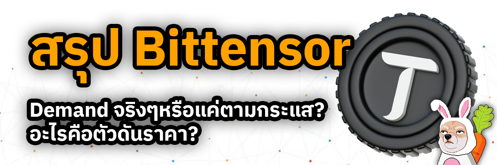
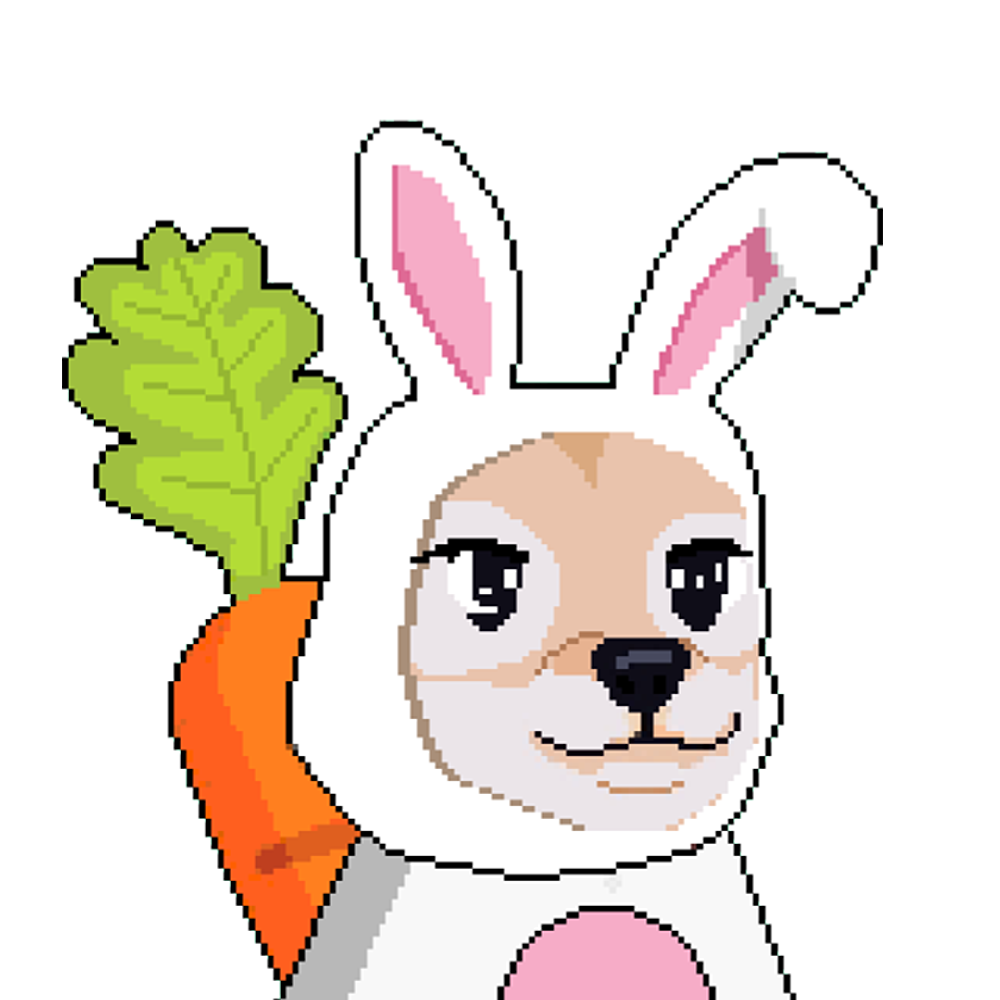
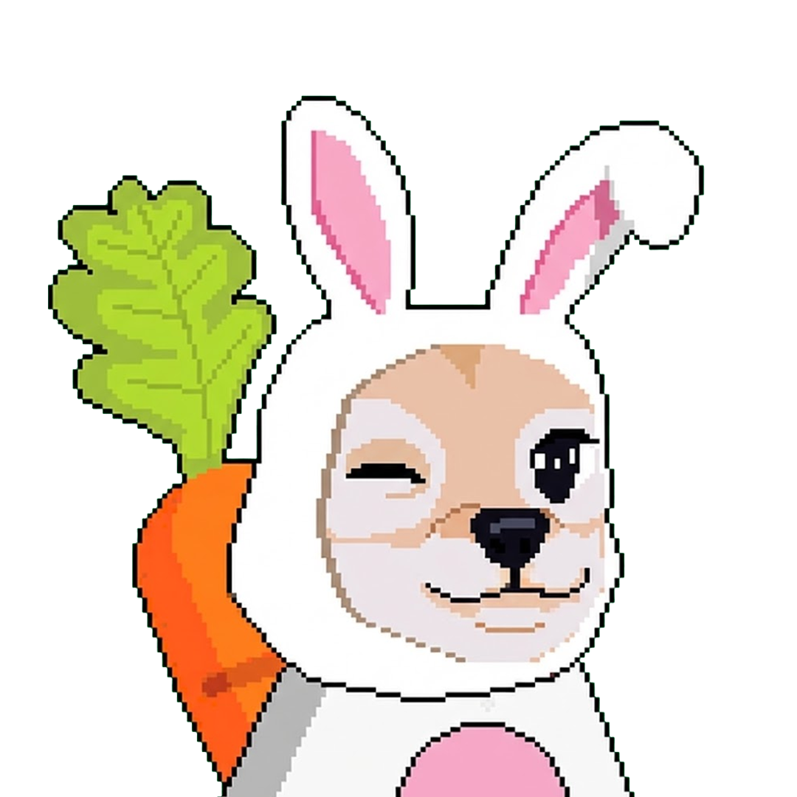
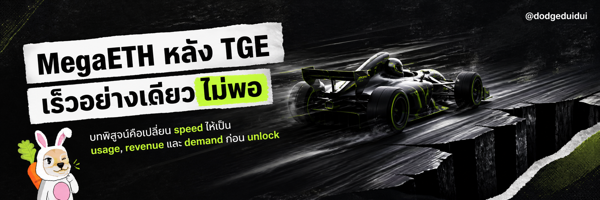
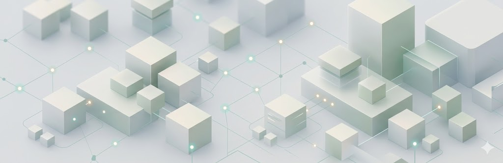
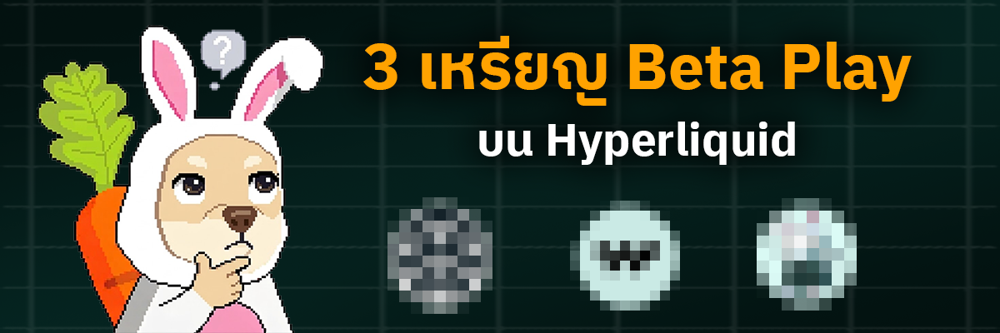
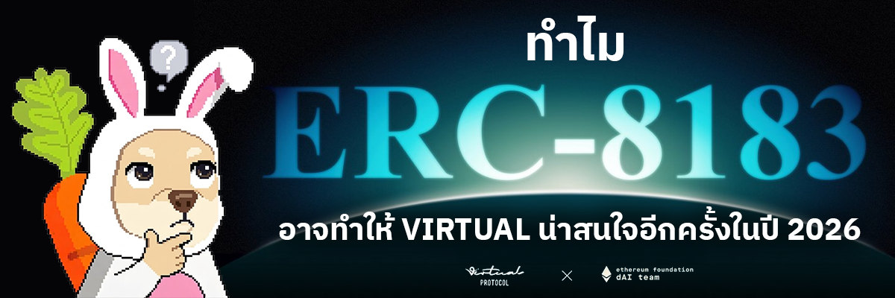

เงินกำลังหมุนไปไหน เมื่อความสนใจเริ่มย้ายจากธีมเดิม
ตัวอย่างโพสต์สำหรับบันทึก market journal: มองกระแสเงิน ความสนใจของตลาด และสัญญาณว่าธีมเดิมกำลังอ่อนแรงหรือกำลังจะกลับมาอีกครั้ง เพื่อใช้เป็น reference ในการอ่าน narrative รอบถัดไป

รวมบทความจาก DuiDui และ Insight ต่างๆเกี่ยวกับตลาดคริปโตและโลกการเงิน

มอง Bittensor ให้ลึกกว่าคำว่า decentralized AI แล้วตั้งคำถามตรง ๆ ว่า valuation ปัจจุบันของ TAO ถูกพยุงด้วยรายได้จริงของ subnet หรือด้วย scarcity, emissions และ AI narrative มากกว่ากัน
อ่านบทความ


จาก airdrop farming tool สู่ yield distribution layer ของ RWA — PT/YT mechanics, ช่องว่าง $10B vs $49.6T fixed income, Boros thesis และ supply picture ที่เริ่มเปลี่ยนทิศ

ตลาดเปลี่ยนจากการถามว่า "บริษัทนี้มี AI ไหม" ไปสู่การถามว่า "ใครสามารถเปลี่ยน CapEx ให้เป็น cash flow ได้" วิเคราะห์ Alphabet, Meta, Microsoft, Amazon และ 5 ตัวชี้วัดที่บอกว่า AI เป็น bubble หรือ supercycle

มอง Grass ให้ลึกกว่าแอปแชร์ bandwidth เพื่อรับ reward และแยกให้ออกว่า bull case ของ AI data sourcing, provenance และ LCR น่าสนใจแค่ไหนเมื่อเทียบกับ supply unlock, botting และ token value accrual risk

เมื่อ BTC ยืนเหนือ $80K ได้จริง ตลาดอาจกำลังย้ายจาก halving-cycle playbook ไปสู่ structural bid จาก ETF, STRC flywheel, application-first infrastructure, TON rails และ AI energy macro

MegaETH มี performance target และ Ethereum alignment ที่น่าสนใจ แต่หลัง TGE คำถามใหญ่คือความเร็ว, USDM flywheel และ KPI-based tokenomics จะแปลงเป็น usage, revenue และ demand ของ MEGA ได้จริงหรือไม่

thesis สำคัญไม่ได้อยู่ที่ mNAV อย่างเดียว แต่อยู่ที่ว่า BitMine มี cash war chest ใหญ่พอให้ ETH-backed preferred ถูกมองเป็นเครดิตโปรดักต์ที่เทรดใกล้ par ได้หรือยัง

แม้ ETH จำนวนมากขึ้นถูกดูดออกจาก liquid float ผ่าน staking และ treasury accumulation แต่ ETH/BTC ยังสะท้อนว่าตลาดยังให้ demand premium กับ BTC มากกว่า และสอง thesis นี้ต้องแยกกัน

เจาะกลไก preferred stock ของ Strategy ที่ซื้อ Bitcoin ได้มากกว่า ETF ทุกตัวในอเมริการวมกัน และทำความเข้าใจว่า volatility กับ par price กำหนด on/off ของ BTC demand นี้อย่างไร
เจาะ Bittensor ให้ลึกกว่าคำว่า decentralized AI แล้วตั้งคำถามว่าฝั่ง demand ของ subnet แข็งแรงพอรองรับ valuation ปัจจุบันแล้วหรือยัง หรือ TAO กำลังถูกตลาด price จาก scarcity, halving และ AI narrative เป็นหลัก

สรุปภาพใหญ่ของ Tempo ในฐานะ payment-focused Layer 1, แผน closed-loop ecosystem ของ Stripe และมุมมองว่าเรื่อง token หรือ airdrop ยังมีลุ้นแค่ไหน

แยก KNTQ, HPL และ PURR ออกจากกันให้ชัดว่าอะไรคือ fundamentals play อะไรคือ credit-layer bet และอะไรคือ high-beta ecosystem trade ถ้า Hyperliquid ยังชนะต่อ

วิเคราะห์การ pivot ของ Virtuals Protocol จาก AI launchpad สู่ infrastructure layer ของ agent economy บน Ethereum — และตั้งคำถามว่าโทเค็น VIRTUAL จะ capture value นั้นได้จริงไหม
ตัวอย่างโพสต์สำหรับบันทึก market journal: มองกระแสเงิน ความสนใจของตลาด และสัญญาณว่าธีมเดิมกำลังอ่อนแรงหรือกำลังจะกลับมาอีกครั้ง เพื่อใช้เป็น reference ในการอ่าน narrative รอบถัดไป
ตัวอย่างโพสต์สำหรับสรุปรายสัปดาห์: เกิดอะไรขึ้นในตลาด อะไรคือ signal ที่สำคัญจริง และอะไรเป็นเพียง noise ที่ควรปล่อยผ่าน เพื่อช่วยให้ตัดสินใจง่ายขึ้น
ตัวอย่างโพสต์สำหรับงานเขียนเชิง thesis: อธิบายมุมมองที่มีน้ำหนักมากขึ้น ว่าทำไมสถานการณ์บางช่วงควรรอ มากกว่าขยับเร็ว และเหตุผลอะไรที่ทำให้ thesis ยังใช้ได้หรือเริ่มต้องทบทวนใหม่